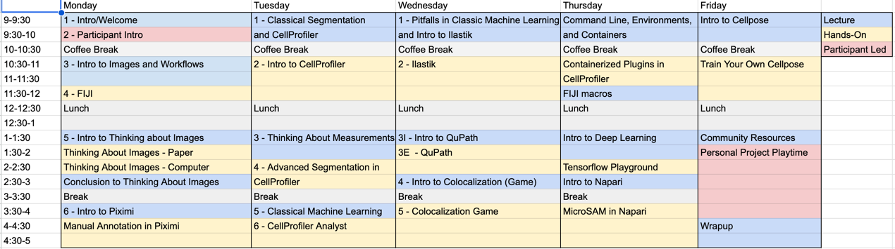

Welcome to BAB3#
We hope you enjoy this course! This book will populate with content as we move through the course.
Here is our agenda for the week!
{kind=link}

Please note - while we know many excellent commercial software options exist, we have chosen to focus on open-source, free tools that you can access at home without any paid software license. Bioimage analysis has a tremendously large, friendly, and robust community for making such software tools - you can explore many such tools (or just post, “here’s my picture, here’s my question, what is the right tool to use?”) at the Scientific Community Image Forum - https://forum.image.sc. Some tools are best for large data (where “large” is many voxels, like lightsheet), some are best for large data (where “large” is many small images from something like a plate-scanning microscope); some are best for creating reusable, reproducible pipelines, and some best for interactive exploration.
If you find the possible number of tools to start from overwhelming, you aren’t alone! We have curated some recommendations in the Bioimaging Guide that we think you may find helpful. Certainly also reading the manual for a given tool is a great way to learn more! By the end of this week, you will hopefully be confident in assessing a tool and seeing if it might fit your needs or not.
The links below will populate as we work our way through the course.
Day |
Title |
Link |
|---|---|---|
Monday |
Welcome |
|
Participant Intro |
||
Intro to Images and Workflows |
||
ImageJ |
||
Intro to Thinking About Images |
||
Thinking About Images |
||
Intro to Piximi |
||
Manual Annotation in Piximi |
||
Tuesday |
Classical Segmentation |
|
Intro to CellProfiler |
||
Thinking About Measurements |
||
Advanced Segmentation in CellProfiler |
||
Classical Machine Learning |
||
CellProfiler Analyst |
||
Wednesday |
Pitfalls in Classic Machine Learning/Intro to Ilastik |
|
Ilastik |
||
Intro to QuPath |
||
QuPath |
||
Intro to Colocalization |
||
The Colocalization Game |
||
Thursday |
Command Line, Environments, and Containers |
Slides |
Containerized Plugins in CellProfiler |
Exercise |
|
Fiji Macros |
Slides |
|
Intro to Deep Learning |
Slides |
|
Tensorflow Playground |
Exercise |
|
Intro to Napari |
Slides |
|
MicroSAM in Napari |
Exercise |
|
Friday |
Intro to Cellpose |
Lecture |
Train Your Own Cellpose |
Exercise |
|
Community Resources |
Slides |
|
Personal Project Playtime |
Slides |
|
Wrapup |
Slides |